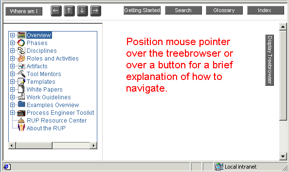

Overview >
Overview >
 Navigating the Process
Navigating the Process
Overview >
Navigating the Process
Navigating the Process
 Elements of the Rational Unified Process browser environment The Rational Unified Process
(RUP) consists of a set of HTML pages which can be viewed using any browser which
supports frames (including Netscape Navigator and Microsoft Internet
Explorer). The figure above shows the major elements you will use to browse
the process.
|
|
|
Rational Unified
Process
|